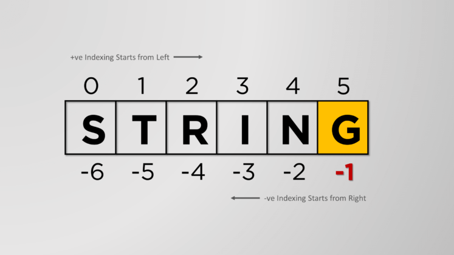

String Cheat Sheet
Contents
String Cheat Sheet#
Escape characters#
An escape character is created by typing a backslash \ followed by the character you want to insert.
Escape character |
Prints as |
|---|---|
|
Single quote |
|
Double quote |
|
Tab |
|
Newline (line break) |
|
Backslash |
|
Backspace |
|
Octal value |
|
Carriage Return |
>>> print("Hello there!\nHow are you?\nI\'m doing fine.")
# Hello there!
# How are you?
# I'm doing fine.
Raw strings#
A raw string entirely ignores all escape characters and prints any backslash that appears in the string.
>>> print(r"Hello there!\nHow are you?\nI\'m doing fine.")
# Hello there!\nHow are you?\nI\'m doing fine.
Raw strings are mostly used for
regular expressiondefinition but that is far beyond our scope here.
Multiline Strings with triple quotes#
>>> print(
... """Dear Alice,
...
... Eve's cat has been arrested for catnapping,
... cat burglary, and extortion.
...
... Sincerely,
... Bob"""
... )
# Dear Alice,
# Eve's cat has been arrested for catnapping,
# cat burglary, and extortion.
# Sincerely,
# Bob
Indexing and Slicing strings#
H e l l o w o r l d !
0 1 2 3 4 5 6 7 8 9 10 11

Indexing#
>>> spam = 'Hello world!'
>>> spam[0]
# 'H'
>>> spam[4]
# 'o'
>>> spam[-1]
# '!'
Slicing#
>>> spam = 'Hello world!'
>>> spam[0:5]
# 'Hello'
>>> spam[:5]
# 'Hello'
>>> spam[6:]
# 'world!'
>>> spam[6:-1]
# 'world'
>>> spam[:-1]
# 'Hello world'
>>> spam[::-1]
# '!dlrow olleH'
>>> fizz = spam[0:5]
>>> fizz
# 'Hello'
find() method#
>>> s = "This is a sentence ending in three."
>>> s.find('e')
# 11
The in and not in operators#
>>> 'Hello' in 'Hello World'
# True
>>> 'Hello' in 'Hello'
# True
>>> 'HELLO' in 'Hello World'
# False
>>> '' in 'spam'
# True
>>> 'cats' not in 'cats and dogs'
# False
upper() and lower() methods#
Transforms a string to upper and lower case:
>>> greet = 'Hello world!'
>>> greet = greet.upper()
>>> greet
# 'HELLO WORLD!'
>>> greet = greet.lower()
>>> greet
# 'hello world!'
isupper() and islower() methods#
Returns True or False after evaluating if a string is in upper or lower case:
>>> spam = 'Hello world!'
>>> spam.islower()
# False
>>> spam.isupper()
# False
>>> 'HELLO'.isupper()
# True
>>> 'abc12345'.islower()
# True
>>> '12345'.islower()
# False
>>> '12345'.isupper()
# False
The isX string methods#
Method |
Description |
|---|---|
|
returns |
|
returns |
|
returns |
|
returns |
|
returns |
|
returns |
The startswith() and endswith() methods#
>>> 'Hello world!'.startswith('Hello')
# True
>>> 'Hello world!'.endswith('world!')
# True
>>> 'abc123'.startswith('abcdef')
# False
>>> 'abc123'.endswith('12')
# False
>>> 'Hello world!'.startswith('Hello world!')
# True
>>> 'Hello world!'.endswith('Hello world!')
# True
The join() and split() string methods#
join()#
The join() method takes all the items in an iterable, like a list, dictionary, tuple, or set, and joins them into a string. You can also specify a separator.
>>> ''.join(['My', 'name', 'is', 'Simon'])
'MynameisSimon'
>>> ', '.join(['cats', 'rats', 'bats'])
# 'cats, rats, bats'
>>> ' '.join(['My', 'name', 'is', 'Simon'])
# 'My name is Simon'
>>> 'ABC'.join(['My', 'name', 'is', 'Simon'])
# 'MyABCnameABCisABCSimon'
split()#
The split() method splits a string into a list.
By default, it will use whitespace to separate the items, but you can also set another character of choice:
>>> 'My name is Simon'.split()
# ['My', 'name', 'is', 'Simon']
>>> 'MyABCnameABCisABCSimon'.split('ABC')
# ['My', 'name', 'is', 'Simon']
>>> 'My name is Simon'.split('m')
# ['My na', 'e is Si', 'on']
>>> ' My name is Simon'.split()
# ['My', 'name', 'is', 'Simon']
>>> ' My name is Simon'.split(' ')
# ['', 'My', '', 'name', 'is', '', 'Simon']
Justifying text with rjust(), ljust() and center()#
>>> 'Hello'.rjust(10)
# ' Hello'
>>> 'Hello'.rjust(20)
# ' Hello'
>>> 'Hello World'.rjust(20)
# ' Hello World'
>>> 'Hello'.ljust(10)
# 'Hello '
>>> 'Hello'.center(20)
# ' Hello '
An optional second argument to rjust() and ljust() will specify a fill character apart from a space character:
>>> 'Hello'.rjust(20, '*')
# '***************Hello'
>>> 'Hello'.ljust(20, '-')
# 'Hello---------------'
>>> 'Hello'.center(20, '=')
# '=======Hello========'
Removing whitespace with strip(), rstrip(), and lstrip()#
>>> spam = ' Hello World '
>>> spam.strip()
# 'Hello World'
>>> spam.lstrip()
# 'Hello World '
>>> spam.rstrip()
# ' Hello World'
>>> spam = 'SpamSpamBaconSpamEggsSpamSpam'
>>> spam.strip('ampS')
# 'BaconSpamEggs'